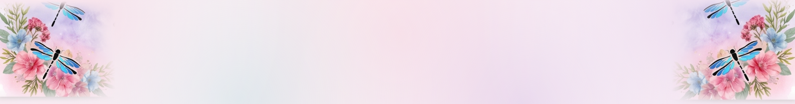

Site banner — full-width masthead

Watercolor wash with florals, ferns & dragonflies melting into both ends; the CreASHions by Asha wordmark is live HTML text (Cormorant italic + Pinyon Script, ASH in mulberry) so it stays crisp and correctly cased at any size.